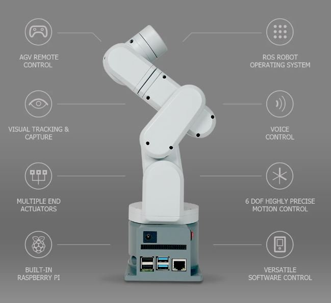
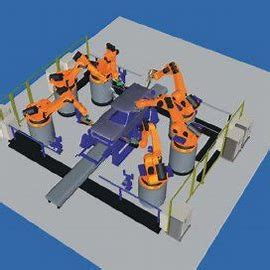
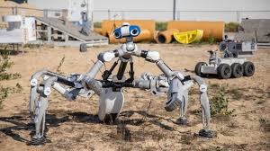

Spatial Winding: Cooperative Heterogeneous Multi-Robot System
By Rebeca Duque Estrada, Fabian Kannenberg, Hans Jakob Wagner, Maria Yablonina, Achim Menges
Introduction
The research on spatial winding explores a novel fabrication technique for constructing lightweight fibrous structures using a cooperative heterogeneous multi-robot system. This system employs the collaborative capabilities of a six-axis robotic arm and a custom CNC gantry to manipulate filament materials into complex spatial geometries. Such an innovative method expands the design potential of filament structures in architectural applications, providing new avenues for creating efficient, lightweight structures.

Methods
The study employs a co-design methodology that integrates geometric and material properties with advanced robotic fabrication techniques. The process, termed Spatial Winding, enables the production of large-scale, non-regular fibrous space frame structures through direct interlocking filament-filament connections. This approach allows the creation of continuous material systems without the need for complex joints or standardized parts, which are typical in traditional space frame construction.

Coreless Filament Winding
Multi-Robot Cooperation
Digital Tool Development
Results
The experimental results demonstrate the effectiveness of the multi-robot system in fabricating large-scale fibrous structures. Two prototypes were developed: a spatially wound table and a long-span structure, both showcasing the flexibility and efficiency of the system. The prototypes highlight the system's capability to produce complex geometries with minimal material use and formwork.

Discussion
The study underscores the benefits of Spatial Winding in creating structurally efficient and lightweight designs. However, it also identifies limitations such as the need for further optimization of robotic path planning and real-time feedback integration. Future research will focus on refining these aspects to enhance the system's capabilities and explore new geometric possibilities for architectural applications.
Conclusion
The research presents a comprehensive framework for utilizing multi-robot systems in the fabrication of complex spatial structures. By leveraging the cooperative capabilities of different robotic agents, the study introduces a novel method for constructing large-scale, lightweight fibrous structures. This innovative approach not only reduces the material and cost limitations associated with traditional space frames but also opens new design possibilities in architecture. Future work will aim to refine the methodology and expand the potential applications of Spatial Winding.
References
Duque Estrada, R., et al. (2020). Spatial winding: cooperative heterogeneous multi-robot system for fibrous structures. Construction Robotics.
Menges, A., et al. (2015). Core-less filament winding for architectural applications.
Kayser, M., et al. (2019). Fiberbots: design and digital fabrication of tubular structures using robot swarms.
.jpeg)
.jpeg)